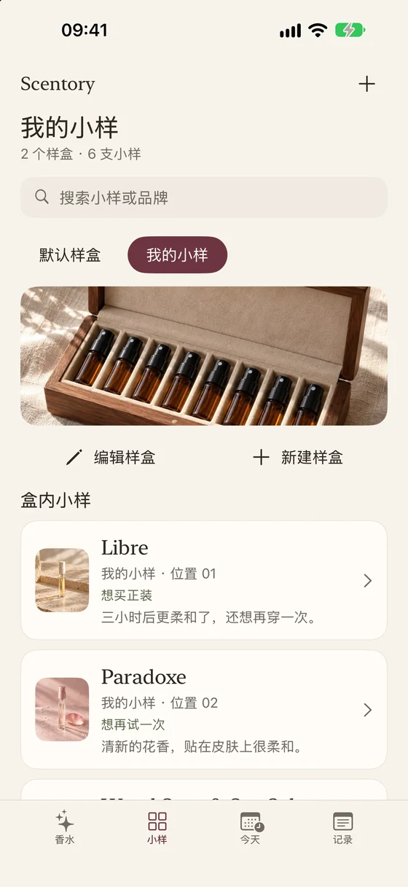
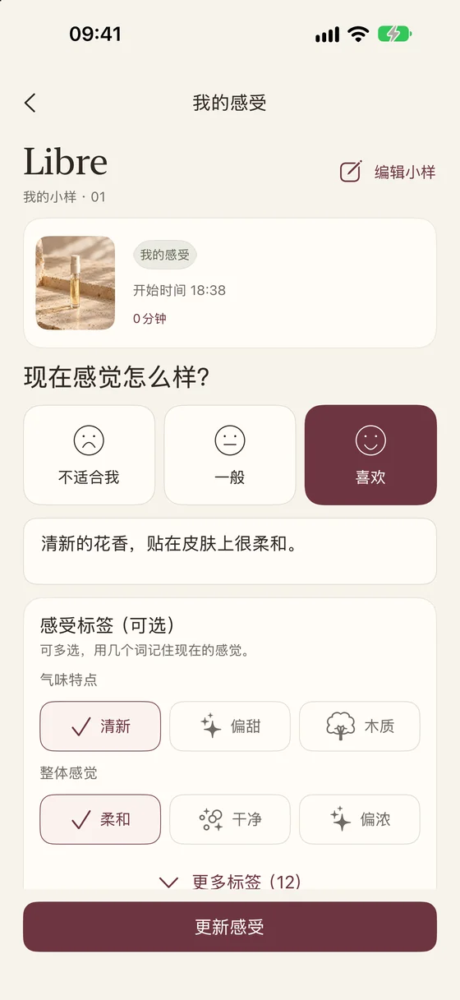

收纳并查找香水小样
用样盒分组，添加照片和位置编号，或直接在自己的样盒照片上标注位置。
iPhone · iOS 17 或更高版本
给小样安排位置，把初闻和后续感受记在一起，再决定要复试、留样还是买正装。
支持离线，私人 iCloud 同步可选。

找到想试的小样，记下香气怎样变化，保存每个决定的理由。
用样盒分组，添加照片和位置编号，或直接在自己的样盒照片上标注位置。
把初闻和后续观察记在同一次试香中，加上气味标签、笔记或可选的回访提醒。
为小样记录留样、复试、放弃或购买正装。需要时按时间线回看原因与旧决定。
打开同一次试香，补记香气后来的变化。把不同时段的感受放在一起，复试时方便对照。

可以手动加小样，也可以从内置离线目录选择。
可以只用本机存储。私人 iCloud 同步可选，也可以导出 JSON 备份。
免费包含 10 支小样、默认样盒和一个自定义样盒。Scentory Pro 可解除小样和自定义样盒限制。